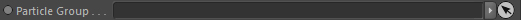
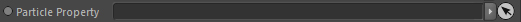
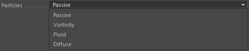
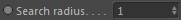
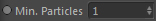
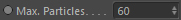
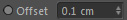
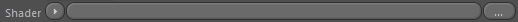
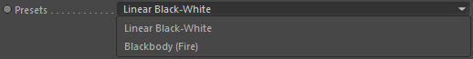

Particle Sampler
The particle sampler allows to sample (read out at an arbitrary location in space) any particle related data
and map it to a color (except when that data is already a color of course).
That way you can render a liquid mesh using liquid particle colors for example.
Or color them based on their velocity or vorticity or any other particle property.
Particle Group

The particle group to read out particles from.
Particle Property

The particle property to read out.
Particles

The particle type to use from the particle group.
Weighted
If activated a weighted color is calculated out of the particles. This is of higher quality than
if it is deactivated because it would then only calculate a simple average color.
Property is a color
Only used if a vector property is linked.
If activated it treats the vector directly as a color.
If deactivated it will take the length of the vector property which will be mapped to the range
defined by Input Minimum and Input Maximum and
will be colored with the Color gradient.
Search radius

The maximum distance used to search for particles (from the surface point that the material belongs to).
The value is given in grid cell/voxel size.
Min. Particles

Minimum amount of particles that are required before being included in the color calculation (weighting).
If less particles are found the shader will return black.
Max. Particles

Maximum amount of particles that will be included in the color calculation (weighting).
Higher amounts allow more particles to be included but may take longer.
Depending on the search radius (if it increases) you may need to increase the maximum amount.
Input Minimum

Defines the range minimum used to map scalar properties values and vector properties length
for being colored by the Color gradient.
Example:
You have a velocity property linked (which is a vector).
We know the minimum length of the velocity vector can only be 0.0. So this would be our minimum.
Input Maximum

Defines the range maximum used to map scalar properties values and vector properties length
for being colored by the Color gradient.
Example:
You have a velocity property linked (which is a vector).
We know the maximum length of the velocity vector can be arbitrary. So we choose a value of 100.0.
If the velocity length is 50.0, the mapped value is 0.5 (0...50...100. Exactly in the middle of the range).
The color at the gradient center is therefore output.
Particle Sampler::Displacement
Offset

The offset (in c4d world coordinates) to displace the sampled surface position.
Shader

A shader that will be used to displace the currently sampled surface position.
White colors in the shader will displace the sample position by 'Offset' amount while black colors represent no displacement.
Particle Sampler::Color
Presets

Two coloring modes can be chosen.
Either using a custom color gradient or a blackbody color spectrum (flame colors).
If you use the blackbody mode, the property values should be defined in temperature range.
Color

Defines the color of the mapped particle property value.
Color (Blackbody)

A preview of the blackbody color spectrum.
Tone Mapping type

(Only available when Type: Blackbody)
As the Blackbody spectrum is highly dynamic (its intensities can go beyond 100% and are radiance values) it must be converted to RGB space. The tone mapping is used for this. You have several color spaces and encoding systems as targets to accomplish this.
NTSC
Blackbody spectrum as perceived on NTSC systems
PAL/Secam
Blackbody spectrum as perceived on PAL/SECAM systems
SMPTE
Blackbody spectrum as perceived in SMPTE standard (see http://www. smpte.org, SMPTE 0274M HD 1080 Standard)
HDTV
Blackbody spectrum as perceived in HDTV standard
CIE Human perception
Blackbody spectrum taking into account the perception of human eyes (physically most accurate mode)
CIE REC 709
Blackbody spectrum as perceived in HD Widescreen (16:9) standard
Color Boost

(Only available when Type: Blackbody)
Allows to boost certain colors of the Blackbody spectrum.
X-component: Redish part
Y-component: Yellowish part
Z-component: Red-Yellow shift
Intensity

(Only available when Type: Blackbody)
Blackbody intensity. This results in a brighter appearance of the colors.
Temperature scale

(Only available when Type: Blackbody)
Rescales the temperature that is used to extract the Blackbody colors. This results in the spectrum to be shifted more to the white point.
Particle Sampler::Clipping
Clips the output to the given range.
Output Minimum

The minimum of the output range. Output colors will not be lower than this value.
Output Maximum

The maximum of the output range. Output colors will not be higher than this value.